Pist Uzunluğu: 5.278 km
Viraj Sayısı: 14
Melbourne'ün kalbindeki bir gölün etrafına kurulu olan bu yarı-cadde pisti, 1996'dan beri Formula 1'in en sevilen duraklarından biridir. Pilotlar için sezonun gerçek anlamda başladığı yer olan Albert Park, hızlı yapısı ve dar kaçış alanlarıyla hata affetmeyen bir karakter sergiler. 2022'de yapılan köklü değişikliklerle daha hızlı ve geçişe açık bir hale getirilmiştir. Hem bir parkın huzurunu hem de F1'in vahşi hızını birleştiren bu pist, özellikle 9 ve 10. virajlardaki yüksek hızlı şikanı ile pilotların limitlerini zorlar.
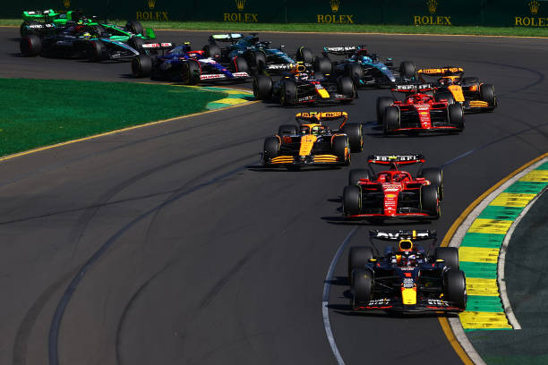

Pist Uzunluğu: 5.451 km
Viraj Sayısı: 16
Çince "Şang" (üstünde) karakteri şeklinde tasarlanan bu devasa pist, modern F1 mimarisinin en etkileyici örneklerinden biridir. Dünyanın en uzun düzlüklerinden birine (1.1 km) sahip olan Şanghay, özellikle ilk virajdaki "salyangoz" şeklindeki daralan yapısıyla pilotların lastik yönetimini en üst düzeyde test eder. Hem teknik virajların hem de yüksek hızın harmanlandığı bu pist, strateji ve cesaretin birleştiği bir mücadele alanıdır.
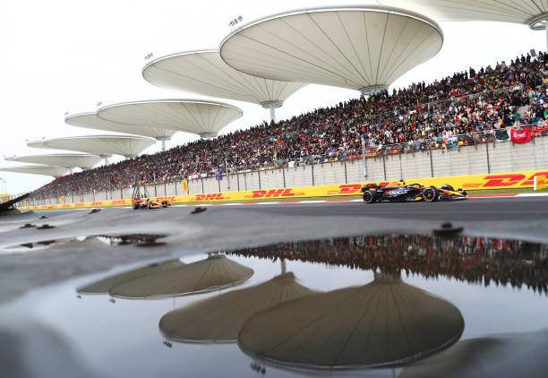

Pist Uzunluğu: 5.807 km
Viraj Sayısı: 18
Dünyadaki tek "8" şeklindeki F1 pisti olan Suzuka, teknik açıdan gridin en zorlu parkurlarından biridir. Honda tarafından bir test pisti olarak inşa edilen bu mekan, efsanevi 130R virajı ve "S" virajları ile pilotların hassasiyetini ölçer. Japonya'nın tutkulu taraftarları ve pistin kendine has kültürü, Suzuka'yı her zaman takvimin en özel yarışlarından biri yapar. Şampiyonlukların belirlendiği tarihi anlara ev sahipliği yapmış olan bu pist, gerçek bir sürüş sanatı gerektirir.
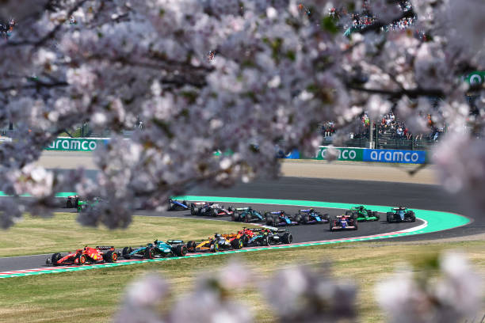

Pist Uzunluğu: 5.412 km
Viraj Sayısı: 15
Çölün ortasında bir vaha gibi parlayan Sahir, F1 takviminin en görkemli gece yarışlarından birine ev sahipliği yapar. Agresif asfalt yapısı nedeniyle lastikleri en çok zorlayan pistlerin başında gelir. Kum fırtınaları ve gece düşen sıcaklık değerleri, mühendisler için tam bir bulmacadır. Özellikle 10. virajdaki dik yokuş aşağı frenleme noktası, şampiyonların bile hata yapabildiği, geçişlerin en yoğun yaşandığı noktalardan biridir.
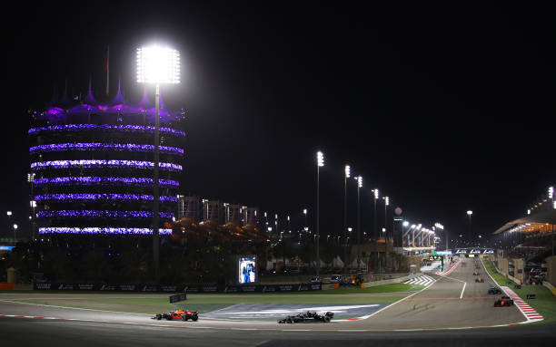

Pist Uzunluğu: 6.174 km
Viraj Sayısı: 27
"Dünyanın en hızlı cadde pisti" unvanına sahip olan Cidde, Kızıldeniz kıyısında adeta bir adrenalin fırtınası estirir. Dar bariyerlerin arasında 250 km/s ortalama hızla gitmek, pilotlar için hataya yer bırakmayan bir satranç maçı gibidir. 27 virajıyla takvimin en kalabalık pisti olan Cidde, yüksek ritmi ve gece ışıkları altındaki atmosferiyle modern Formula 1'in en heyecan verici duraklarından biri haline gelmiştir.
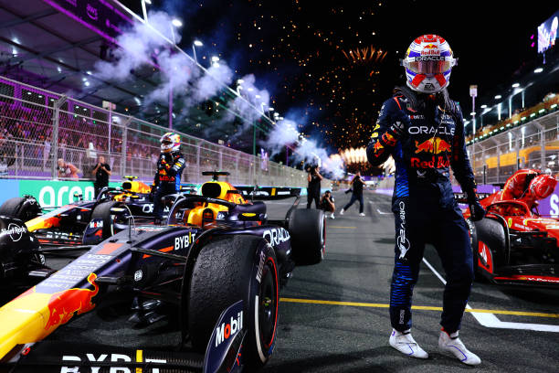

Pist Uzunluğu: 5.412 km
Viraj Sayısı: 19
Hard Rock Stadyumu'nun etrafına kurulan Miami pisti, spor ve eğlenceyi birleştiren bir Amerikan rüyasıdır. Şehrin enerjisini yansıtan bu pist, yüksek hızlı bölümleri ve otoyol altından geçen teknik kısımlarıyla eşsiz bir karaktere sahiptir. Pilotların hem yüksek hıza hem de aşırı neme karşı mücadele ettiği Miami, kısa sürede takvimin en popüler ve "ikonik" yarışlarından biri olmayı başarmıştır.
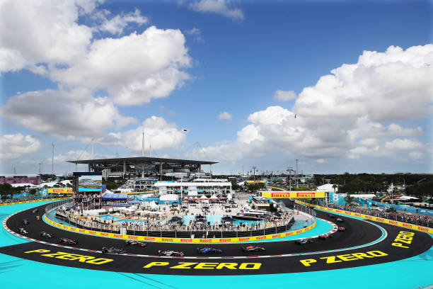

Pist Uzunluğu: 4.909 km
Viraj Sayısı: 19
Adını Ferrari'nin kurucusu ve oğlundan alan Imola, İtalya'nın motor sporları kalbinde yer alan gerçek bir klasik pisttir. Dar yapısı, "Acque Minerali" gibi teknik virajları ve saat yönünün tersine işleyen karakteriyle pilotlar için büyük bir meydan okumadır. 1994'teki trajik olayların ardından güvenlik standartları artırılan pist, F1'in geleneksel ruhunu modern yarış dünyasıyla birleştiren, Tifosi'nin kırmızı bayraklarıyla donatılan efsanevi bir duraktır.
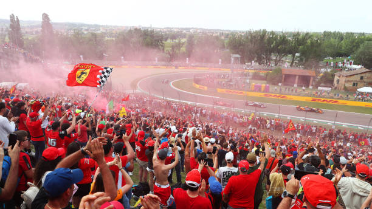

Pist Uzunluğu: 3.337 km
Viraj Sayısı: 19
"Motor sporlarının mücevheri" olan Monako, 1929'dan beri takvimin en prestijli noktasıdır. Kumarhanelerin, yat limanlarının ve dar tünellerin arasından geçen bu sokaklarda hata yapmanın bedeli duvardır. Geçiş yapmanın neredeyse imkansız olduğu bu dar yollar, pilotun saf yeteneğini ve konsantrasyonunu test eder. Monako'da kazanmak, sadece bir yarış kazanmak değil, bir efsane olmaktır.
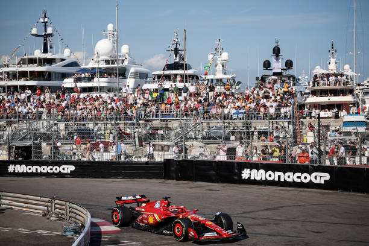

Pist Uzunluğu: 4.657 km
Viraj Sayısı: 14
Takımların ve pilotların her virajını ezbere bildiği bu pist, bir aracın aerodinamik verimliliğini ölçmek için dünyadaki en iyi ölçüttür. Uzun düzlüğü, teknik orta sektörü ve lastikleri aşırı zorlayan son virajlarıyla Barselona, takvimdeki en dengeli pistlerden biri olarak kabul edilir. Burada kazanan bir araç, genellikle sezonun geri kalanında da her pistte hızlı olacağını kanıtlamış sayılır.
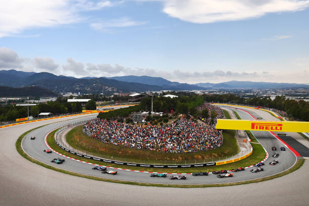

Pist Uzunluğu: 4.361 km
Viraj Sayısı: 14
Montreal'deki yapay Notre Dame Adası'nda yer alan bu pist, "Duvarların Şampiyonu" olarak bilinir. Özellikle son şikandaki "Şampiyonlar Duvarı", tarihteki birçok dünya şampiyonunun aracını bariyerlere bırakmasına neden olmuştur. Yüksek hızlı düzlükleri takip eden sert frenaj noktalarıyla Kanada, her zaman heyecan dolu, bol geçişli ve güvenlik aracının eksik olmadığı yarışlara sahne olur.
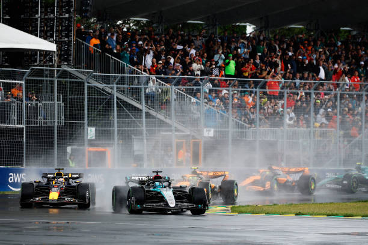

Pist Uzunluğu: 4.318 km
Viraj Sayısı: 10
Styrian Alpleri'nin muazzam manzarası eşliğinde koşulan bu pist, takvimin en kısa tur sürelerine sahip yerlerinden biridir. Sadece 10 virajdan oluşmasına rağmen, dik yokuşları ve keskin virajları pilotlar için hiç de kolay değildir. Pistin kısalığı, sıralama turlarında milisaniyelerin bile devasa farklar yaratmasına neden olur. Red Bull'un evi olan bu pist, her yıl turuncu dumanlar saçan binlerce taraftara ev sahipliği yapar.
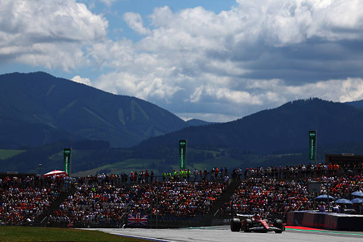

Pist Uzunluğu: 5.891 km
Viraj Sayısı: 18
Formula 1'in doğduğu yer olan Silverstone, 1950 yılındaki ilk resmi yarışa ev sahipliği yapmıştır. Eski bir havaalanı üzerine kurulu olan pist; Copse, Maggotts ve Becketts gibi dünyanın en hızlı viraj kombinasyonlarından bazılarına sahiptir. Britanya'nın değişken havası ve taraftarların inanılmaz coşkusuyla birleşen bu "hız tapınağı", her yıl takvimin en ikonik ve heyecan verici mücadelelerinden birini sunar.
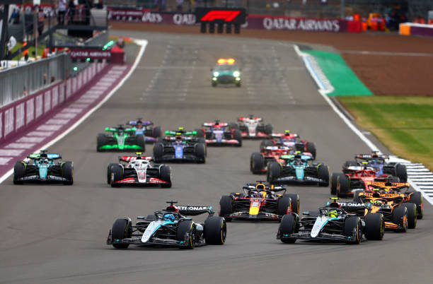

Pist Uzunluğu: 7.004 km
Viraj Sayısı: 20
Arden Ormanları'nın derinliklerine gizlenmiş bu devasa pist, takvimin en uzun ve en ikonik pistidir. Efsanevi "Eau Rouge" ve "Raidillon" viraj kombinasyonu, bir pilotun cesaretinin sınandığı en yüksek noktadır. Spa'da bir tur atmak, ormanın içinden geçen bir hız trenine binmek gibidir; bir ucu güneşliyken diğer ucu yağmurlu olabilir. Pilotların "gerçek bir sürüş" deneyimi yaşadığı, değişken hava koşullarıyla stratejinin alt üst olduğu, her virajında tarihin izlerini barındıran efsanevi bir pisttir.
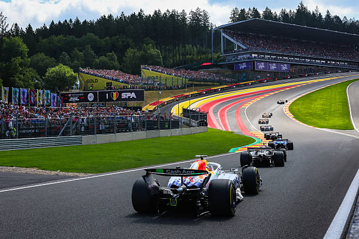

Pist Uzunluğu: 4.381 km
Viraj Sayısı: 14
"Binaları olmayan bir Monako" olarak adlandırılan Hungaroring, dar ve kıvrımlı yapısıyla geçiş yapmanın en zor olduğu pistlerden biridir. Sürekli birbirini takip eden virajlar nedeniyle pilotlar nefes alacak vakit bulamazlar. Genellikle aşırı sıcaklarda koşulan bu yarış, hem fiziksel dayanıklılık hem de kusursuz bir strateji gerektirir. Lastik yönetimi burada galibiyetin anahtarıdır.
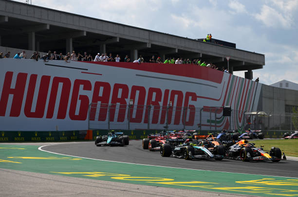

Pist Uzunluğu: 4.259 km
Viraj Sayısı: 14
Kuzey Denizi kıyısındaki kum tepeleri arasına kurulu olan Zandvoort, klasik bir yarış pistinin modern heyecanla birleşimidir. İndyCar tarzı eğimli virajları (banking) ile F1 takviminde eşsiz bir yere sahiptir. Özellikle 3. ve 14. virajlardaki yüksek eğim, pilotlara farklı sürüş çizgileri deneme imkanı verir. Max Verstappen'in evi olan bu pistte atmosfer, adeta bir karnaval havasında geçer.
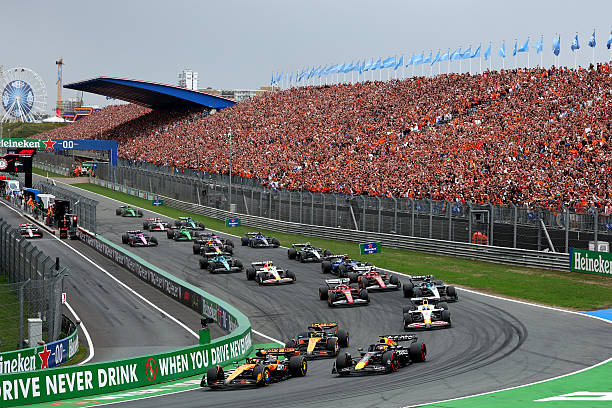

Pist Uzunluğu: 5.793 km
Viraj Sayısı: 11
"Hız Tapınağı" (Temple of Speed) olarak bilinen Monza, Ferrari'nin evi ve Tifosi'nin kalbidir. 1922'den beri ayakta olan bu tarihi mekan, motor seslerinin tribünlerdeki kırmızı dalgalanmalarla birleştiği bir tutku merkezidir. Curva Grande ve Parabolica gibi virajlar, hızın en saf halini temsil eder. Minimal kanat açıları, 350 km/s üzerindeki hızlar ve geç frenaj düelloları ile Monza, motor gücünün ve cesaretin son noktaya kadar zorlandığı bir arenadır.
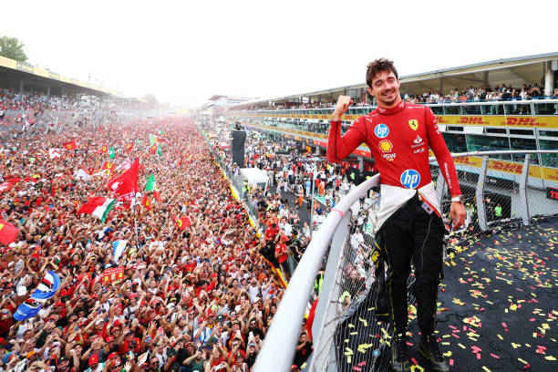

Pist Uzunluğu: 6.003 km
Viraj Sayısı: 20
"Hız ve Tarihin Buluşma Noktası" olan Bakü, dünyanın en dar virajına (Kale Virajı) ve en uzun düzlüklerinden birine sahiptir. Bir yanda modern gökdelenler diğer yanda tarihi surların arasından geçen pilotlar, 350 km/s hıza ulaştıkları düzlüklerin ardından çok sert frenajlar yapmak zorundadır. Bakü, "beklenmeyeni bekle" mottosuyla her zaman kaotik ve unutulmaz yarışlara sahne olur.
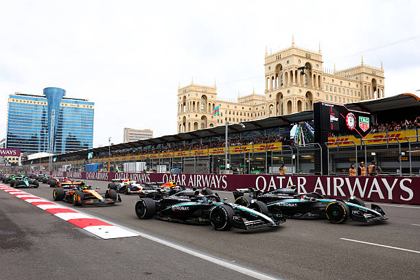

Pist Uzunluğu: 4.940 km
Viraj Sayısı: 19
Formula 1 tarihinin ilk gece yarışı olan Singapur, şehrin görkemli silüetinin altında adeta bir fiziksel dayanıklılık testidir. Aşırı nem ve 30 dereceyi aşan sıcaklıklarla birleşen dar sokaklar, pilotların yarış boyunca yaklaşık 3 kilo kaybetmesine neden olur. Hataya yer bırakmayan bariyerleri ve ışıl ışıl atmosferiyle Marina Bay, takvimin en zorlu ve en estetik duraklarından biridir. Burada kazanmak için sadece hızlı değil, aynı zamanda çelik gibi sinirlere sahip olmak gerekir.
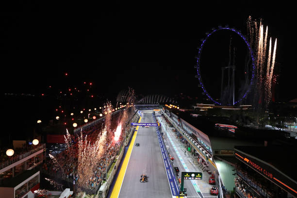

Pist Uzunluğu: 5.513 km
Viraj Sayısı: 20
Teksas eyaletinin Austin şehrinde yer alan bu pist, dünyanın en iyi virajlarının bir sentezi gibidir. İlk virajdaki devasa yokuş yukarı tırmanış ve ardından gelen keskin dönüş, F1'in en ikonik başlangıç noktalarından biridir. Silverstone ve Suzuka'dan esinlenen hızlı bölümleriyle COTA, hem araçların aerodinamik gücünü hem de pilotların cesaretini sınayan, Amerikan misafirperverliğiyle harmanlanmış modern bir klasik pisttir.
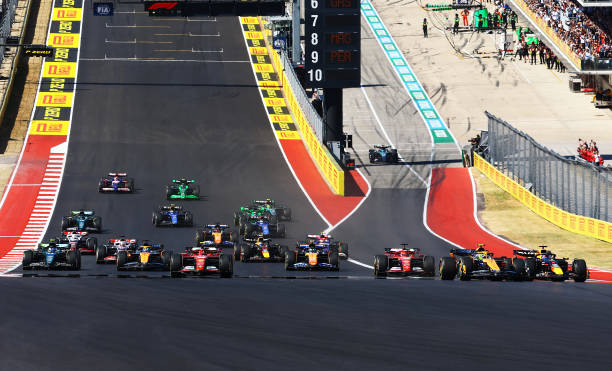

Pist Uzunluğu: 4.304 km
Viraj Sayısı: 17
Deniz seviyesinden 2.200 metre yüksekte yer alan bu pistte asıl rakip "ince hava"dır. Havanın yoğunluğunun az olması, araçların hem motor gücünü hem de aerodinamik yere basma kuvvetini etkiler. Pistin en ikonik bölümü olan "Foro Sol" stadyum kompleksi, binlerce taraftarın coşkusuyla pilotlara bir rock yıldızı gibi hissettirir. Düzlük hızı rekorlarının kırıldığı nadir yerlerden biridir.
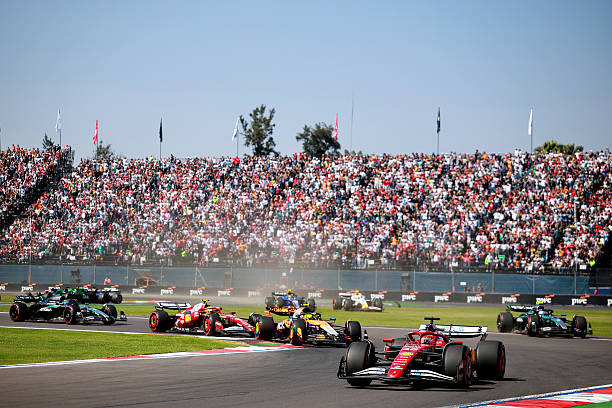

Pist Uzunluğu: 4.309 km
Viraj Sayısı: 15
Motor sporlarının kalbinin attığı Interlagos, şampiyonlukların belirlendiği efsanevi bir arenadır. Saat yönünün tersine dönülen ender pistlerden biri olması pilotların boyun kaslarını aşırı zorlar. Senna S virajlarından başlayan tur, Brezilyalı taraftarların inanılmaz enerjisiyle birleşince ortaya saf bir tutku çıkar. Değişken hava durumu ve kısa tur süresi, burada her an her şeyin değişebileceği anlamına gelir.
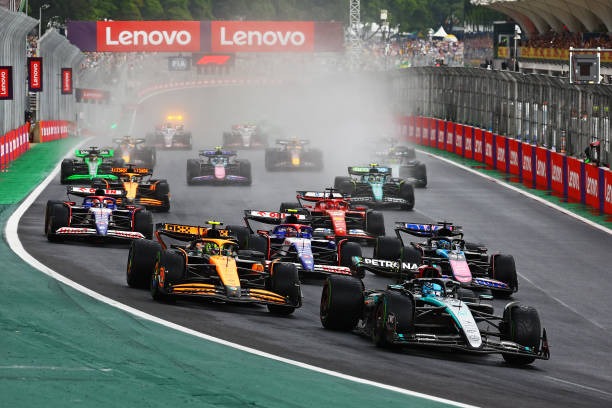

Pist Uzunluğu: 6.201 km
Viraj Sayısı: 17
Dünyanın eğlence başkentinin kalbinden, ünlü "Strip" bulvarından geçen bu cadde pisti, F1'in en görkemli projelerinden biridir. Casinoların ve devasa ışıklı binaların arasından 340 km/s hızla geçmek eşsiz bir deneyimdir. Gece serinliğinde koşulan yarışta lastikleri ısıtmak en büyük sorundur. Vegas, ışıltılı atmosferi ve devasa düzlükleriyle modern F1'in "gösteri" tarafını temsil eder.
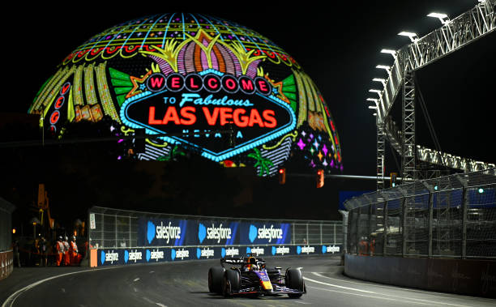

Pist Uzunluğu: 5.419 km
Viraj Sayısı: 16
Aslen bir MotoGP pisti olarak tasarlanan Lusail, yüksek hızlı ve akıcı virajlarıyla F1 araçları için beklenmedik derecede zorlu bir parkurdur. Neredeyse hiç yavaş virajın olmaması, pilotların sürekli G kuvvetine maruz kalmasına neden olur. Gece ışıkları altında, çöl rüzgarlarıyla mücadele edilen bu pist, modern tesisleri ve fiziksel sınırları zorlayan yapısıyla takvimin en zorlu duraklarından biridir.
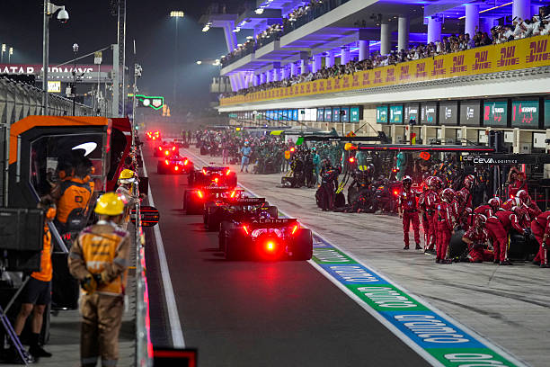

Pist Uzunluğu: 5.281 km
Viraj Sayısı: 16
Formula 1 sezonunun geleneksel final noktası olan Yas Marina, gün batımında başlayıp gece ışıkları altında biten büyüleyici bir yarıştır. Otelin içinden geçen pist bölümü ve marina manzarasıyla görsel bir şölen sunar. 2021 yılında yapılan güncellemelerle daha akıcı ve geçişe uygun bir hale getirilen pist, sezonun tüm yorgunluğunun ve rekabetinin son bulduğu, şampiyonların taç giydiği görkemli bir sahnedir.
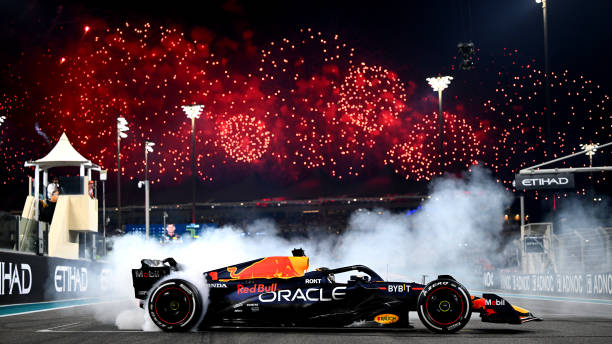